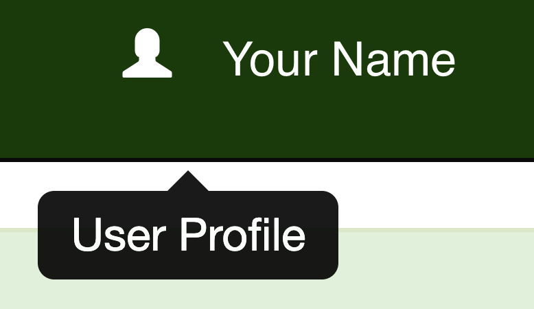

User profile and settings
Once you have signed up for an account and logged in, your user profile page can be accessed by clicking your account name in the Navigation bar:

The user profile page displays important information and settings tied to your account, grouped under a number of headings.
User Profile
This section contains basic account details such as your registered name, email address, and user type. Some of the entries here can be adjusted by editing your profile.
- Forenames & Last name
- The forename(s) and last name of the account holder. Editable.
- Email address
- The email address which the account is registered to. This is the email used to log in, and to which any email notifications are sent (see User Subscriptions). Editable.
- User type
- Indicates whether the account is a Basic or Power user. Some of the more powerful Complib functions such as extended searches are restricted to Power users. Not editable.
- Account status
- Indicates whether the account is Pending (awaiting confirmation of email address), Active or Suspended. Not editable.
- Date registered
- The date and time at which the account was created. Not editable.
User Subscriptions
This section indicates which (if any) email notifications your account is subscribed to. Your user preferences for certain Complib functions are also listed here. Your user subscriptions and preferences can be changed by editing your profile.
Email notifications
- All Issues
- Notifications will be sent whenever an Issue is raised or commented on by other users.
- My Issues
- Notifications will be sent whenever an Issue you raised, or which you have commented on, is commented on by other users (see: Raising an Issue).
- Composition Requests
- Notifications will be sent whenever a composition request is raised or commented on by other users.
- All News
- Notifications will be sent whenever a News item is published to the Complib homepage.
Functionality
These settings control the appearance and behaviour of some Complib features.
- Show hunt bell properties in method view and search
- Adds a Hunt bell properties tab to both method pages and method searches. These properties can, for example, be used to explicitly specify a hunt bell path when searching for methods.
- Show jump methods and compositions in searches
-
By default, Complib does not show methods and compositions including jump changes in searches, though they can still be viewed with a link. Enabling this setting will allow such methods and compositions to be included in search results.
For more on jump changes, see Method properties > Changes and Place notation > Jump changes.
User Statistics
This section displays account usage statistics, including how many private compositions, methods and collections are tied to the account.
- Last logged on
- The date and time at which your account was last logged into.
- Last access
- The date and time of the most recent occasion on which the account accessed any page in the Composition Library.
- Number of sessions
- The number of distinct times you have visited the Composition Library while logged in to this account.
- Method views
- The number of times you have viewed method pages while logged in to this account.
- Composition views
- The number of times you have viewed composition pages while logged in to this account.
- Extended searches
- The total number of extended searches you have performed while logged in to this account.
- Private methods
- The number of methods in the Private library which you created using this account. Acts as a link to a method search which lists them all.
- Private compositions
- The number of compositions in the Private library which you created using this account. Acts as a link to a composition search which lists them all.
- Private collections
- The number of collections in the Private library which you created using this account. Acts as a link to a collection search which lists them all.
- Compositions published
- The number of compositions in the Public library which you created and published using this account. Acts as a link to a composition search which lists them all. The total number of published compositions including those which have since been deleted is also given.
Library Details
Lists metadata relating to the account.
- User Id
- A unique reference number for the user account. Appears at the end of the URL of the account's user profile page.
- Created on
- The date and time at which the account was created, and who created it.
- Modified on
- The date and time at which the account was last modified, and who edited it.
Editing your profile
Your account's user profile can be edited by clicking the  Edit button at the top right of the user profile page. When you are happy with the changes you have made, click Save at the bottom of the page.
Edit button at the top right of the user profile page. When you are happy with the changes you have made, click Save at the bottom of the page.
The following items on the user profile page can be edited:
- Forenames
- Surname
- Email address
- User Subscriptions
Note: Forenames and Surname
The forenames and surname attached to your account determine how your name will appear under Library Details when you publish compositions and collections, and when you raise or comment on Issues. It is also how you will be addressed in email correspondence.
You are requested not to use a pseudonym, as this can cause confusion as to the providence of library entries. If you are a change ringer, the name attached to your account should be the one you are known by in performance reports on BellBoard.
Changing your password
To change the password used to log in to your account, click the  Change password button at the top right of the user profile page. You will be asked to enter your existing password as well as the new one.
Change password button at the top right of the user profile page. You will be asked to enter your existing password as well as the new one.
If you have forgotten your password, you can reset it via the login page (NB: requires logging out).
Deleting your account
You can delete your Complib account entirely by clicking the Delete button at the top right of the user profile page. You will be prompted to confirm that you are sure before the account is deleted.
Warning: Account deletion
You should think very seriously before deleting your Complib account.
Once an account is deleted, you will no longer have access to any private methods, compositions or collections you created with it. In addition, you will no longer be able to edit any public compositions which you have published using the account.
If there is a problem with your account, or if you accidentally delete your account, you should get in touch directly by sending an email to support@complib.org.